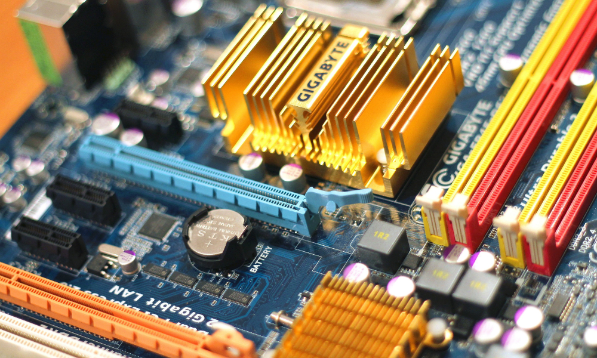

BİLGİSAYARIN DONANIM PARÇALARI

Kasa
Kasa,bilgisayarı oluşturan tüm dahili bileşenleri tutar.
Genelde anakartın,kabloların ve sürücülerin takılmasını kolaylaştırmak için tasarlandı.Sonrasında sadece kolaylaştırmak değil görünüm olarak da çok ciddi
noktalara geldi.
Kasalar, çeşitli bilgisayar bileşenlerini barındırmak ve tüketicinin ihtiyaçlarını karşılamak için tüm farklı şekil ve boyutlarda gelir.
Sade bir renk de seçebilirsiniz,şaşalı,ışıklı bir kasa da seçebilirsiniz.
Bilgisayar kasalarının boyutları da vardır;
-Desktop Kasa
-Mini Tower Kasa
-Mid Tower Kasa
-Full Tower Kasa
-Slim Kasa.
-Desktop Kasa
-Mini Tower Kasa
-Mid Tower Kasa
-Full Tower Kasa
-Slim Kasa.
Anakart
Anakart direkt bilgisayar kasasına vidalanır.Diğer bütün parçalar anakarta takılır ve adı'da bu yüzden anakarttır.
CPU,güç kaynağı,RAM,ekran kartı gibi parçalar ona bağlanır.Amacı içeride asayişi sağlamaktır.Böylece bütün parçalar düzenli bir şekilde iletişim kurabilirbilir
ve çalışabilir.İyi bir anakart bolca bağlantı seçeneği sunar.Birde mümkün olduğunca az darboğaz yapar.Bu,tüm bileşenlerin verimli ve maksimum
potansiyelde çalışmasını sağlar.
İşlemci/CPU
İşlemci bilgisayarın beyni gibidir,tüm bilgileri hesaplama düzeyinde işler.
Bilgileri RAM'den alır ve bilgisayarda çalışması için bilgileri işler.
Genelde,anakart'a sabitlemek için ortasında bir kesik olan menteşeli bir plakaya sahip bir kaldıraç veya mandal bi sokete oturtulur.
CPU temelde bir bilgisayarın beyni gibidir. Tüm bilgileri hesaplama düzeyinde işler.
Bilgisayarın daha hızlı çalışmasını sağlamak için saat hızı artırılabilir ama bu sefer de daha çok ısınacaktır.Buna da hız aşırtma (overclock) denir.
Bu yüzden işlemcinin ısı sorunundan kurtulmak için soğutucu ve fan düzeneği gereklidir.
Çok fazla farklı işleci türü vardır.Bilgisayarlar için en iyileri Intel,AMD ve NVidia'dır.
RAM
RAM,hızlı okuma ve yazma erişimi sağlayan geçici veri depolama cihazıdır.Elektriğin kesildiği anda depolanan tüm verileri kaybettiği an
lamına gelir.RAM,verileri işlemci'nin işlemesi için hazır tutar.RAM'in hızı,bilgisayarın hızına doğrudan katkı sağlar.
Aynı zamanda işlemci gibi overclock'a sahiptir.Yüksek performans için yapılabilir.
RAM'in açılımı ise "Random Access Memory" dir.
Ekran Kartı
Ekran kartı,anakart'daki verileri işler ve görüntülenmesi için bilgileri monitöre gönderir.
Bunu bir HDMI, DisplayPort, DVI veya VGA konektörü kullanarak yapabilir.
Ekran kartı aynı zamanda, video kartı veya grafik kartı olarak da adlandırılabilir.
Oyun için kaliteli ekran kartı istendiğinden gamer'lerin en çok ilgisini çeken parçadır.
Bir ekran kartının, soğutma gerektiren ana bileşen olan bir GPU (Grafik İşlem Birimi) vardır.
Bir GPU, bir CPU'dan daha yavaştır, ancak video oluşturma için gerekli matematiksel işlemlerin üstesinden gelmek için tasarlanmıştır
Karttaki bellek miktarı,tasarıma göre değişir.
Grafik kartları, grafik performansı için optimize edilmek üzere özel olarak tasarlanmış GDDR (Grafik Çift Veri Hızı) SDRAM kullanır.
GDDR, düz DDR ram ile karşılaştırıldığında daha yüksek bir bant genişliğini idare edecek şekilde tasarlanmıştır.
Ses Kartı
Anakarta yerleşik ses yongası çoğu zaman ses çıkışı için kullanılır.
Ancak, bir ses meraklısıysanız veya oyun oynarken daha yüksek ayrıntılı sesi tercih ediyorsanız, iyi bir ses kartı kullanmak isteyebilirsiniz.
Ses kartları bilgisayara çeşitli şekillerde takılır. USB, PCI yuvası veya PCI Express x 1 yuvası aracılığıyla olabilir.
Karttaki bir ses işleme yongası, tüm ses işlemeyi gerçekleştirir ve genellikle çok güçlü bir işlemci değildir.
Bir ses kartı, çeşitli ses ekipmanlarıyla geniş bir bağlantı yelpazesi sunabilir.
Hard Disk
Çoğu bilgisayarda bir hard disk bulunur. Genellikle tüm verileri depolayan mekanik bir sürücüdür.
Verileri depolamanın yanı sıra, işletim sistemini ondan çalıştırmak için bir önyükleme sürücüsü olarak da kullanılabilir.
Mekanik diskin en büyük sorunu,kırılgan ve bozulabilir olmasıdır.
SSD
SSD de bir sür sabit sürücüdür ama herhangi bir hareketli parçası yoktur.Belli miktarda verileri tutabilen bir flash
bellekten oluşur.
SSD'ler sürekli boyut olarak büyürken,yüksek depolama isteyen veriler için fiyatı biraz pahalı.
Mekanik sürücünün daha ucuza ucuzları'da vardır ama SSD,yüksek performanslı bir sürücüdür.Hem hızlı hemde bir zarar gelse de kolayca hasar almaz.
Güç Kaynağı
Kasanın içinde bir de güç kaynağı monte edilir.
Bir bilgisayar güç kaynağı aşağıdaki voltajları sağlar:
+ 3.3v: Bu voltaj anakarta verilir.
+ 5V: Bu voltaj anakarta ve diğer dahili bileşenlere verilir.
+ 12V: Bu voltaj anakarta ve diğer dahili bileşenlere verilir.
-12V: Bu voltaj anakarta verilir.
Güç kaynakları için farklı watt değerleri elde edersiniz. Watt değeri ne kadar yüksek olursa, ihtiyaç duyan parçalar için o kadar yüksek elektrik akımı sağlanabilir. Watt cinsini ne kadar artırırsanız, güç kaynağının fiyatı da o kadar yüksek olacaktır. Güç kaynağı birde yanına soğutma fanı getirir.Fan sayesinde yüksek eforlu bir çalışmada tüm bileşenler de soğur ve rahatlar.
+ 3.3v: Bu voltaj anakarta verilir.
+ 5V: Bu voltaj anakarta ve diğer dahili bileşenlere verilir.
+ 12V: Bu voltaj anakarta ve diğer dahili bileşenlere verilir.
-12V: Bu voltaj anakarta verilir.
Güç kaynakları için farklı watt değerleri elde edersiniz. Watt değeri ne kadar yüksek olursa, ihtiyaç duyan parçalar için o kadar yüksek elektrik akımı sağlanabilir. Watt cinsini ne kadar artırırsanız, güç kaynağının fiyatı da o kadar yüksek olacaktır. Güç kaynağı birde yanına soğutma fanı getirir.Fan sayesinde yüksek eforlu bir çalışmada tüm bileşenler de soğur ve rahatlar.
Monitör
Monitör,bilgisayarın ekran kartından gelen verileri görsel olarak bize sunar.
Piyasada birsürü monitör çeşitleri vardır.En çok,ışıklı bir LCD monitörüdür.
Her monitör farklı boyutlardadır.Yükseklik-genişlik oranları değişmektedir.
Mesela, 16:9 boyunda bir monitör 16 parça genişlik,9 parça da yüksekliğe sahiptir.
Kavisli olan monitörler de vardır ama daha pahalıdır.
Monitörler ayrıca, oyun için kullanıcı girdisiyle gecikmeleri ortadan kaldırmak için gereken yüksek taleplere ayak uydurmak için hızlı bir yanıt süresine sahiptir.
Klavye
Klavye,bilgisayar ile insan arasında iletişim kurmaya yarar.Klavyeden bir tuşa basınca,bilgisayara hangi tuşa basıldığını söylemek için verilerin belli bir bölümünü gönderir.
Bilgisayar bu bilgileri herşeyde kullanabilir.Mesela,bir belgede kullanılan bir harf olabilir.
İki ana klavye türü vardır.Biri F klavye diğeri Q klavyedir.
Fare/Mause
Fare, kullanıcının monitörde görüntülenen bir işaretçiyi hareket ettirmesine ve bilgisayarla daha sezgisel bir etkileşim deneyimlemesine olanak tanır.
Bu günlerde farelerin üç düğmeden daha fazla düğmesi var.
Bununla birlikte, üç ana düğme, kullanıcının ekstra menü ve seçenekleri seçmesine, yakalamasına, kaydırmasına ve bunlara erişmesine olanak tanır.
Bir bilgisayar faresi kablolu veya kablosuz olabilir. İkincisi ise pil gerektirir.